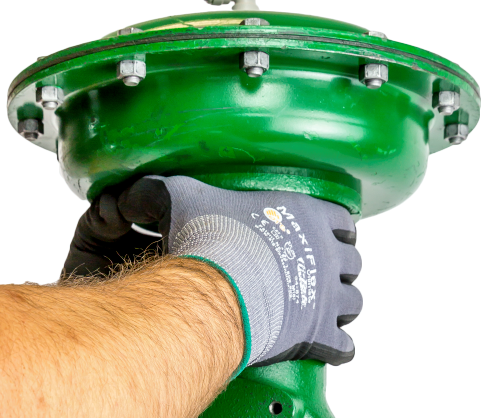

ch3-m3 pass: figrow; mounting sequence (hoist on, lock the yoke)
Mounting the 657 on the Valve


First push the valve plug and stem down into the body, away from the actuator — a raised stem fouls the mounting and bends. Do not connect the actuator and valve stems yet.